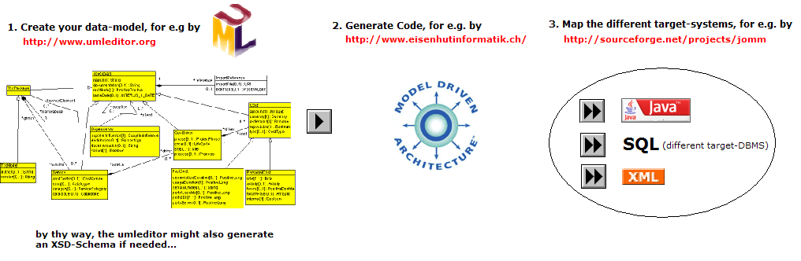

JOMM is an important part of a mosaic in a greater context of a full MDA development cycle. JOMM is responsible of mapping model objects in any Java application where persistence behaviour is expected.
It smoothely fits into a development cycle by the same authors
of the famous UML/INTERLIS-Editor:
